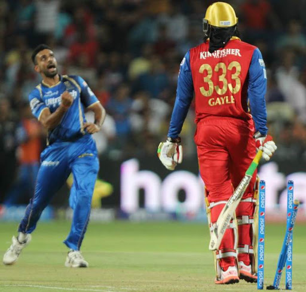

Optimal PowerPlay Strategies in Limited Overs Cricket
By Suchir Joshi | November 4, 2018
At its core, cricket is a game of tradition. The first game of international cricket was played in 1844, between the US and Canada, and although much has changed in terms of equipment, rules, and techniques, many foundational principles have remained the same. The traditional format of the sport is called a Test match, aptly named as it’s a 5 day test of physical and mental fortitude. However, the shorter formats of ODI and T20 cricket have risen to unprecedented heights, captivating new audiences and packing stadiums around the world like never before. Modern limited overs cricket now demands a completely different set of skills to succeed: broadly speaking, it demands more aggressive batting than Test cricket. Taking wickets is the ultimate goal of bowling teams in Test cricket, but in white-ball cricket, wickets are usually more valuable for the runs they end up saving, not for the wicket itself. That subtle but crucial distinction will form the crux of this piece, as I will argue that despite the modern trend towards defensive and containing limited overs bowling, taking early wickets in the powerplay overs is still imperative for success in limited overs cricket.
For those unfamiliar with the rules of the cricket, let me first offer a simple analogy to baseball. Imagine that baseball had a pitch restriction per innings; in other words, hitting teams were limited to facing 10 pitches per innings, after which the innings would terminate regardless of the number of outs. Hitting teams would now look to be much more aggressive early on, and time honored fundamentals such as working the count would simply lead to disaster, because such strategies would consume too many pitches. On the flip side, pitchers’ strategy would drastically change as well. Instead of aiming to get hitters out as quickly as possible, if they know that the innings would always end after 10 pitches, they would try to limit hits in those 10 pitches by pitching defensively, without necessarily caring about how many hitters they actually get out. This is very similar to the shorter formats of cricket: there is a restriction on the number of balls a batting team can face, so instead of trying to get as many batters out as possible, the bowling team bowls defensively and tries to not give up a lot of runs instead. Keeping this in mind, the data leads to an interesting and perhaps counterintuitive conclusion: bowling teams should actually look to get as many batters out as possible in the first few balls of any innings, because that leads to less resources available and thus less total runs scored.
Firstly, the data indicates that there is a strong inverse relationship between early wickets lost and eventual innings score. Using available ball by ball data for ODI cricket since 2005, there is a strong linear correlation between how many batters get out in the first 10 overs, and the team’s total median innings score.
This linear model is surprisingly accurate. I expected a moderate trend, but this is an extremely strong correlation, with an R-value of -0.995. I used a cutoff of at least 10 instances of the event occurring, that is, I wanted data from at least 10 innings where a given number of wickets fell in the first 10 overs before including it in my linear model. Occurrences with 5 and 6 wickets falling in the PowerPlay are too rare to draw any meaningful conclusions, despite them supporting the trend: 159.5 and 110 median runs scored, respectively.
The linear model intercept is 290.4, with slope -29.95. Contextualizing those numbers, a batting team that doesn’t lose any wickets in the PowerPlay overs can be expected to score around 290 on average, and for every wicket lost in the PowerPlay, their expected score drops by nearly 30. That’s more than the difference between a par score and a match-winning total, and it strongly suggests that batting teams should reconsider an early aggressive strategy and instead look to build a solid foundation at the top of the order. Using our baseball analogy, hitters should start conservatively in the innings, and not end up in a situation such as burning through 2 outs in the first 4 pitches, leaving 6 pitches for the last hitter. This would ensure a more efficient allocation of resources.
Analysis for T20 matches follows a similar trend. Using aggregated data from over 1,500 IPL, NatWest T20, BBL, and International T20 matches in the past decade, the corresponding plot for wickets lost during the first 6 overs vs. the median total innings score looks very similar. 6 overs is used instead of 10 because that is the length of the batting PowerPlay in T20’s.
 I used the same cutoff as the ODI parameters to obtain this data, and the findings are equally striking, with an R-value of -0.993 revealing an extremely strong trend. Given that T20 is inherently a more unpredictable and volatile format, the fact that it too forms a very strong linear trend is quite shocking. The model has intercept 177.69, with slope -13.54. When given context, teams that don’t lose any wickets in the first 6 overs are expected to score around 177 runs on average, and for every wicket they lose, their expected score drops by around 13. In a format where margins are often extremely tight, 13 runs is often a game-changing difference. This supports the idea of consolidation at the beginning of an innings, because chances of scoring big after losing early wickets diminishes significantly.
The common argument for batting aggressively in the PowerPlay overs for both formats, even at the possible cost of early wickets, is the palpable reward of faster run scoring. However, the data also indicates that scoring these early runs don’t necessarily translate to significantly higher innings totals. Firstly, using ODI data, there is again a strong linear trend between the score after 10 overs and the eventual innings score, but a bit of investigation reveals some curious details.
I used a similar cutoff to the previous plot, except I included all data for which 5 instances of that particular score have occured. This is because a certain score is less probable than a certain amount of wickets lost, due to the increased range of scores, so a smaller cutoff was used to avoid overly restricting available data. The linear model is extremely strong here as well, with an R-value of 0.97, but notably, the intercept is 137.954 with slope 2.529. This means that every additional run scored in the PowerPlay overs is only worth 2.5 additional total runs scored! Given that the PowerPlay represents 20% of an ODI innings, every additional run scored in that period should correspond to 5 more total runs; however, the data seems to disprove this intuition. Perhaps due to the relaxing of fields and general defensive mindset of bowling teams throughout the middle overs, batting teams with slow starts in the PowerPlay still usually manage to reach competitive totals of 200-250. However, the data shows that scoring more and more in the PowerPlay has diminishing returns, and losing 2 or 3 wickets as a result of this aggressive play is very hard to recover from. Going back to our baseball analogy, a good point of comparison is baseball’s Run Expectancy. A single with 0 out is expected to yield 0.859 runs, however, with 1 out that value drops dramatically to 0.509, and the corresponding 2 out value is 0.24. A single is worth more with 0 outs because the batting team has more resources available to convert that single into runs. Using the same principle, scoring PowerPlay runs in cricket has a low Run Expectancy of 2.5 because those runs come with more risk than scoring the same runs in the middle overs, when batting conditions become easier and the field allows for more easy runs in general. Overall, it’s easier to recover from slow starts than early wickets, as further analysis indicates.
There are 471 instances of batting teams losing 2 or more wickets in ODI PowerPlays, and those instances are plotted here: each bar represents a certain threshold, and the height of that bar indicates how often teams eventually cross that threshold, given the loss of 2 early wickets. As the data reveals, chances of posting competitive totals severely diminish. Teams down 2 or more wickets in their PowerPlay only reach 220, the minimum standard for a competitive total, 47% of the time, and only post decent totals of over 260 with 26% frequency.
When it comes to scoring imposing totals of 300 or more, these teams crumble. Having lost 2 or more early wickets, batting teams post 300 only 8.5% of the time, compared to 30% of the time when batting teams instead lose 0 or 1 early wickets. Losing these early wickets is tantamount to failure, as modern ODI cricket especially demands large first innings totals, given the relative ease of chasing larger totals today as opposed to earlier eras.
I will conduct similar analysis for T20’s, and the trend here is similarly striking. The plot comparing Score After 6 Overs and Median Total Innings Score can be seen below, and with an R-value of -0.956, the model is sufficiently accurate to allow for analysis.
Once again, I used similar cutoff’s to my ODI parameters in defining the scope of the data to be consistent. This model has intercept 92.38 and slope 1.47, which means that every extra run scored in the PowerPlay only translates to 1.47 extra runs scored in total! Given that the PowerPlay represents 30% of the total innings, every additional PowerPlay run should have an expected run value of 3.33, yet there is actually only a loose correlation. The same reasons behind this shift apply to T20 cricket, where a general relaxation of fields and increasingly defensive mindset of bowling teams allows teams to recover from slow starts and still post competitive totals of 140 and upwards. However, in T20 as well, recovering from losing 2 or more early wickets seems to be much harder than recovering from a slower start, as the data shows below. There are 661 occasions of teams losing 2 or more wickets in the batting PowerPlay, and for each listed score threshold, ranging from 140-180, the bar represents how often teams reach that threshold.

Teams only reach 140, the minimum standard for a competitive total, 57% of the time, and only manage decent totals of over 160 27% of the time. And as for immense, match-winning efforts of 180 or more? Forget it. The data shows that teams with this early disadvantage go on to reach 180 only 10% of the time, compared to 34% of the time when they lose less than 2 early wickets. Losing a couple of early wickets seems to have a disastrous impact on scoring massive totals, showing that, similar to ODI’s, T20 teams often never recover from such starts.
This data holds several implications regarding both batting and bowling strategies in the PowerPlay overs. Batting teams should focus more on getting solid starts in the PowerPlay, ideally without losing early wickets, before following the traditional model of accelerating later on with wickets in hand. Bowling teams should focus their efforts on taking early wickets, which means fuller lengths and aggressive fields early on. Only when the middle overs begin should the defensive transition begin. Even in this hyper-modern era of limited overs cricket that heavily favors batsmen, bowling with the new ball still offers attacking bowlers a chance to heavily impact the game. In the chaos of 3 distinct formats of the game, the principle of preserving your wicket as a batsman, at least for a couple of overs, still rings universally true.